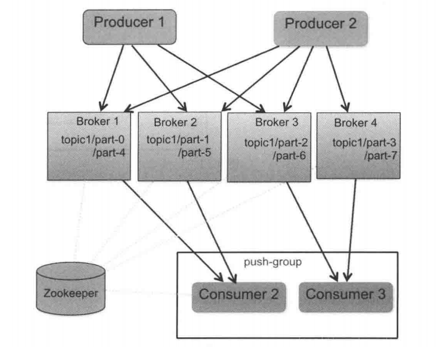
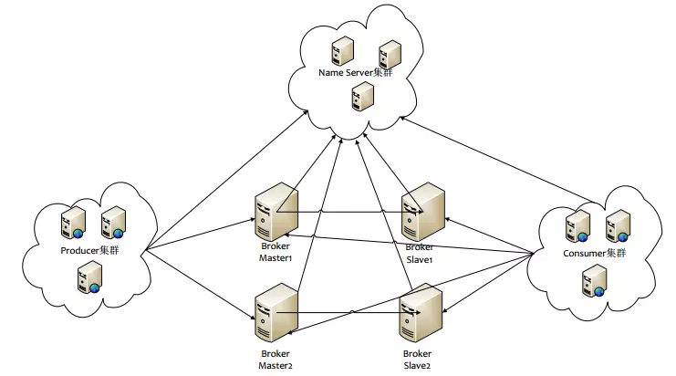
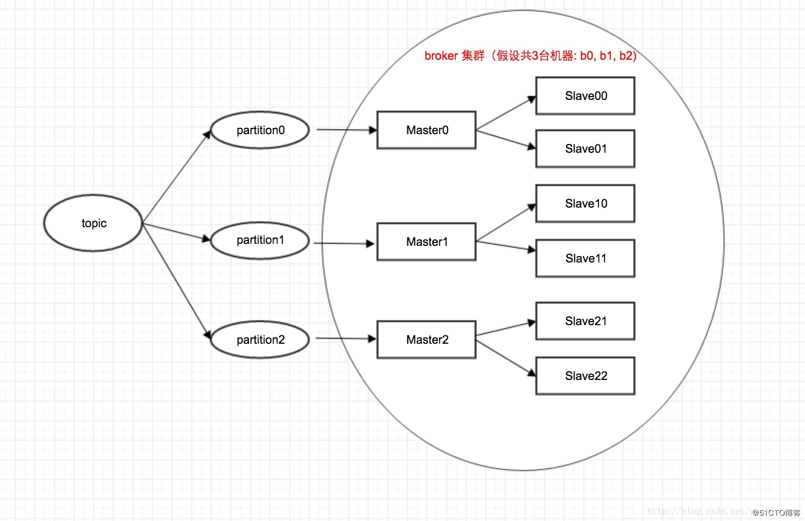
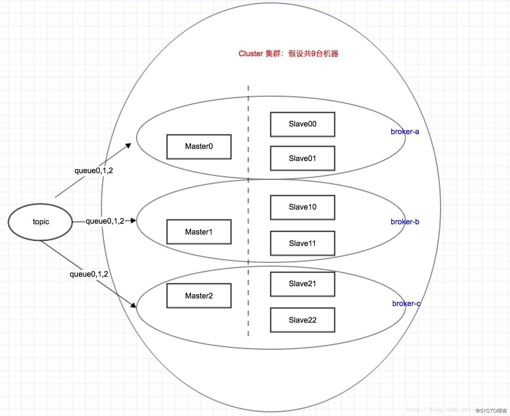
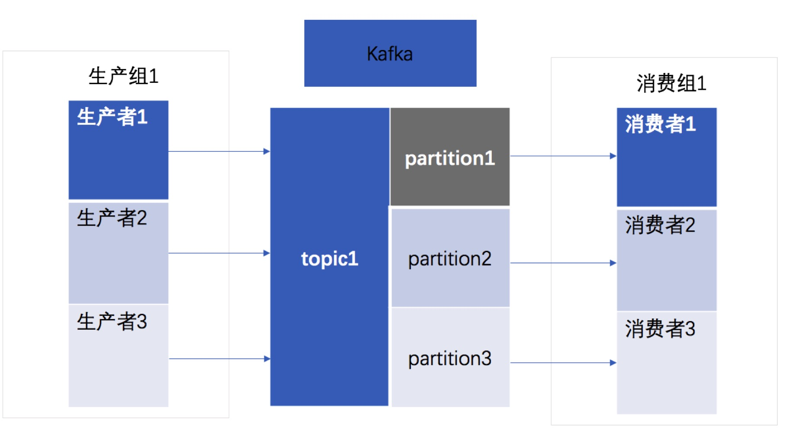
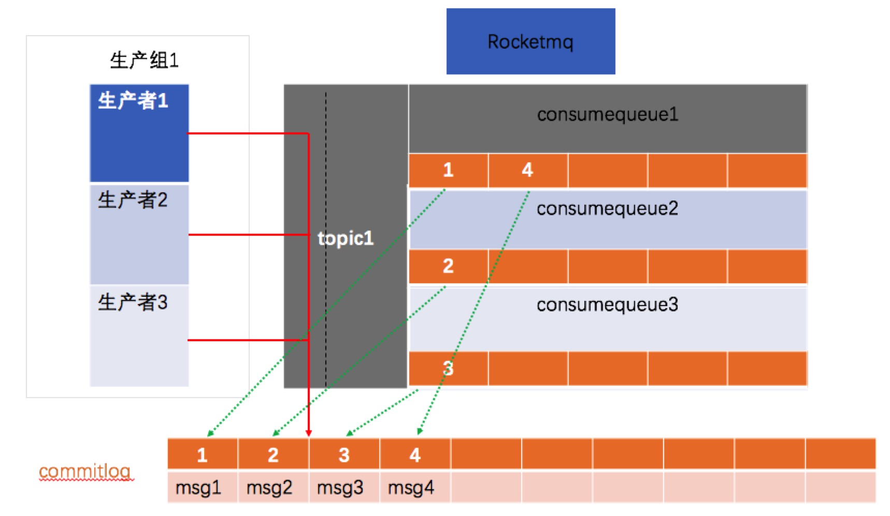

RokectMQ 和Kafka对比
| 对比项 | Kafka | RocketMQ | 总结 |
|---|---|---|---|
| 部署架构 |  |  | 1. Zookeeper对应NameServer,NameServer没有用强一直的watch来监听各个节点可靠性，而是使用心跳机制。 2. RocketMQ没有用ZK做高可用负载，原因是Broker在RocketMQ中就是物理概念，一台机器就是一个broker,Broker-Master和Broker-Slave关系在部署初始化是确认，运行过程中无需负载的选主切换，当然RMQ也就不支持在Broker-Master挂掉是自主选主Slave为master,需要手动切换。 |
| 行3架构拓扑图 |  |  | 1.kafka的partition对应rmq的queue 2.都可以为topic指定对应的分区数量 3.通过topic创建命令来说明topic、partition和broker (Master/Slave)的关系 kafka: sh bin/kafka-topics.sh –create –zookeeper localhost:2181 –replication-factor 3 –partitions 3 –topic mytopic roketmq: sh /root/rocketmq/bin/mqadmin updateTopic -c defaultCluster -readQueueNums/writeQueueNums 3 -t mytopic 可以看出不一样的是kafka需要指定 –replication-factor来说明这个topic一个master需要几个slave，而rmq不需要，因为这个Master/slave拓扑结构是在配置写死的 4. Kafka的Master/slave是逻辑结构，可以是同一台机器，而rmq不行，必须在初始化时就在配置文件中写死，要么是不同机器，要么是同一机器的不同进程（可以是端口不一样），是对应的物理结构。kafka可实现在通过zk自动Slave升级成Master 5. Rmq之所以没有用zk做主备自动切换，也是为了简化整个系统的复杂度，无需过多的关心选主和一致性的问题，同时也为了保证消息的不乱序消费，造成业务异常。 |
| 消息存储 |  |  | 1.kafka和rmq都是用文件形式来持久化消息2. kafka为每个partiion单独文件存储；而rmq不是所有的topic的所有queue的数据存储在commitlog中（默认按1G大小存储，超过时新建一个文件，按文件大小偏移量命名），并每个topic的每个queue用consumerqueue小文件存储消费位点信息，可以通过消费位点到commitlog快速定位到对应的数据行。rocketmq这样做的好处是：文件顺序写，小文件随机读。优化了kafka当topic较多时的性能问题。那么rmq是怎么做到的： - producer消息先投递到commitlog,异步最终一致写入consumerqueue - 由于是一个文件，根据linux文件写入缓存页批量写的机制，写入非常迅速，因为没有多个文件的资源竞争 - 随机读，因为cosumerqueue中的数据非常少，能够一次性读取很多数据，访问速度和内存相当，通过预读取机制这部分性能可以忽略不计，对于commitlog这个大文件虽然是随机读，但是整体是有序的，还是可以充分利用PageCache的性能，再加上文件内存映射技术，很好的保障了在很多topic下的读写性能。 |
| 性能 | 单机写入TPS约在百万条/秒，消息大小10个字节 | RocketMQ单机写入TPS单实例约7万条/秒，单机部署3个Broker，可以跑到最高12万条/秒，消息大小10个字节 | 1. Kafka的TPS跑到单机百万，主要是由于Producer端将多个小消息合并，批量发向Broker 2. RocketMQ为什么没有这么做？Producer通常使用Java语言，缓存过多消息，GC是个很严重的问题Producer调用发送消息接口，消息未发送到Broker，向业务返回成功，此时Producer宕机，会导致消息丢失，业务出错Producer通常为分布式系统，且每台机器都是多线程发送，我们认为线上的系统单个Producer每秒产生的数据量有限，不可能上万。缓存的功能完全可以由上层业务完成。 |
| 数据可靠性 | Kafka使用异步刷盘方式，异步Replication | RocketMQ支持异步实时刷盘，同步刷盘，同步Replication，异步Replication | 1.RocketMQ的同步刷盘在单机可靠性上比Kafka更高，不会因为操作系统Crash，导致数据丢失。在强可靠性要求场景可用 2.另外Kafka的Replication以topic为单位，支持主机宕机，备机自动切换，但是这里有个问题，由于是异步Replication，那么切换后会有数据丢失，且会有消息乱序的风险。 |
| 消费失败重试 | Kafka消费失败不支持自动重试 | RocketMQ消费失败支持定时重试，每次重试间隔时间顺延 | 1. kafka如果需要实现消息重试，需要自己实现取出消息重新发送一遍。 |
| 消息顺序 | Kafka支持消息顺序，但是一台Broker宕机后，就会产生消息乱序 | RocketMQ支持严格的消息顺序，在顺序消息场景下，一台Broker宕机后，发送消息会失败，但是不会乱序 | 当broker的leader挂掉瞬间，旧的leader对client可见，所以可能存在多个消费者消费不同的broker情况，造成消息乱序消费。 |
| 定时消息消费 | Kafka不支持定时消息 | RocketMQ支持 | 开源版本RocketMQ仅支持定时Level阿里云ONS支持定时Level，以及指定的毫秒级别的延时时间 |
| 事物消息 | 不支持 | 支持但是没有超时回查机制 | 阿里内部版本支持完整实物消息 |
| 消息回溯 | 可以按照Offset来回溯消息 | 支持按照时间来回溯消息，精度毫秒，例如从一天之前的某时某分某秒开始重新消费消息 | 典型业务场景如consumer做订单分析，但是由于程序逻辑或者依赖的系统发生故障等原因，导致今天消费的消息全部无效，需要重新从昨天零点开始消费，那么以时间为起点的消息重放功能对于业务非常有帮助。 |
| 消息消费并行度 | Kafka的消费并行度依赖Topic配置的分区数，如分区数为10，那么最多10台机器来并行消费（每台机器只能开启一个线程），或者一台机器消费（10个线程并行消费）。即消费并行度和分区数一致 | 顺序消费方式并行度同Kafka完全一致 乱序方式并行度取决于Consumer的线程数，如Topic配置10个队列，10台机器消费，每台机器100个线程，那么并行度为1000。 |
RoketMQ在不要求顺序消费时，并行度可以很高 |
| 开发语言 | Scala | Java | 分布式系统中，Java的语言生态更好 |
| 消息堆积能力 | 非常好，上亿级 | 非常好，上亿级 | 消息堆积能力都非常好 |
| 商业支持 | LinkIn开源 | Alibaba开源 | |
| 成熟度 | Kafka在日志领域比较成熟 | RocketMQ在阿里集团内部有大量的应用在使用，每天都产生海量的消息，并且顺利支持了多次天猫双十一海量消息考验，是数据削峰填谷的利器。 | 商业场景RocketMQ更加适合，并且更符合开发习惯 |
QA
为什么使用消息队列?消息队列的作用是什么?
异步化、解耦、消除峰值
Kafka 的 Topic 和分区内部是如何存储的，有什么特点?
新建topic时指定分区数量，并为每个分区维护消息数据存储文件，随着topic数量增加，文件数量增加，读写性能下降。
与传统的消息系统相比，Kafka 的消费模型有什么优点?
- Kafka是一个分布式系统，易于向外扩展。
- 它同时为发布和订阅提供高吞吐量。
- 它支持多订阅者，当失败时能自动平衡消费者。
- 消息的持久化。
Kafka 如何实现分布式的数据存储与数据读取?
日志形式存储，并生成索引文件，能够通过offset下标快速定位数据行
Kafka 为什么比 RocketMQ 支持的单机 Partition 要少?
数据存储形式决定，kafka为每个分区都生成存储文件，当较多的Parition时，随机写冲突加大，性能下降
为什么需要分区，也就是说主题只有一个分区，难道不行吗?
分区是为了尽可能的减少资源竞争，增加处理并行度
日志为什么需要分段?
方便快速清理无用数据，提高磁盘利用率
Kafka 是依靠什么机制保持高可靠，高可用?
利用zk实现Master/Slave主备切换
消息队列如何保证消息幂等?
利用消息的唯一标识，在业务系统中做好幂等，消息中间件本身无需保证幂等
让你自己设计个消息队列，你会怎么设计，会考虑哪些方面?
- 消息的持久化
- 分布式可靠性
- 消息堆积能力
- 消息重试
参考文章：
分布式消息队列RocketMQ与Kafka架构上的巨大差异
RocketMQ与Kafka对比
RocketMQ吐血总结
RocketMQ原理介绍最透彻的文章